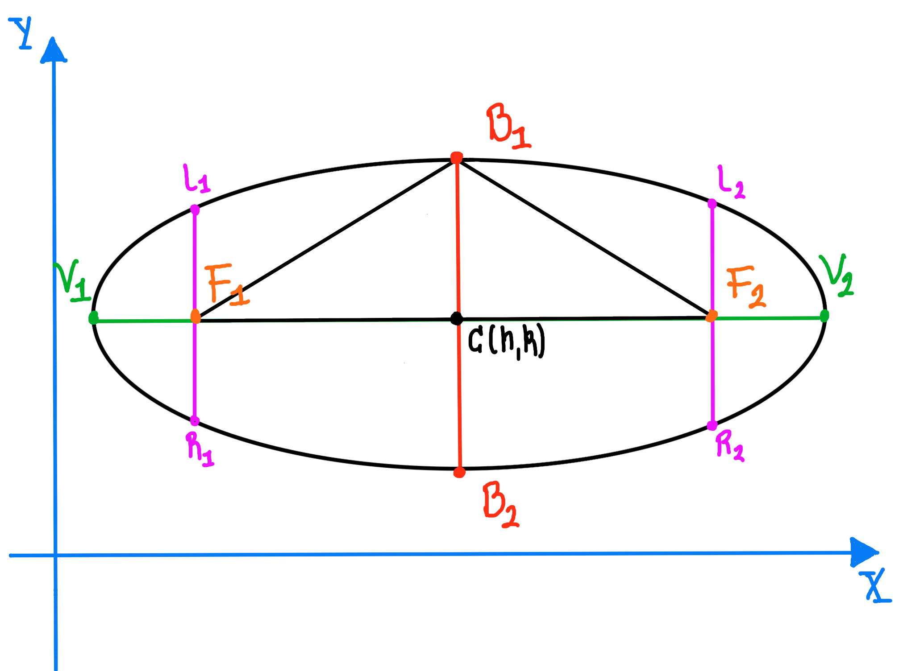

Ecuación de la Elipse
Elementos de la elipse
Recordemos que la Elipse es el conjunto de puntos los puntos en el plano tales que la suma de sus distancias
a dos puntos fijos, llamados focos, es constante:
$$d(P,F1) + d(P,F2) = 2a $$
- $C$ : Centro
- $V_1$ y $V_2$ : Vértices
- $F_1$ y $F_2$ : Focos
- $|\overline{F_1 F_2}| = 2c$
- $\overline{B_1 B_2}$ : Eje menor
- $|\overline{B_1 B_2}| = 2b $
- $\overline{V_1 V_2}$ : Eje mayor
- $|\overline{V_1 V_2}| = 2a$
- $\overline{L_1 R_1}$ y $\overline{L_2 R_2}$
- $|\overline{L_1 R_1}| = |\overline{L_2 R_2}| = \displaystyle{\frac{2b^2}{a}}$ : Lados rectos
- $e = \displaystyle{\frac{c}{a}} < 1$ : Excentricidad
Se satisfacen las siguientes condiciones:
- $a > b $
- $a > c $
- $a^2 = b^2 + c^2 $
Ecuacion del a Elipse con centro en el origen
Elipse horizontal
- Ecuación canónica : $ \displaystyle{\frac{x^2}{a^2} + \frac{y^2}{b^2} =1}$
- Vértices : $(a,0)$ y $(-a,0)$
- Vértices : $(c,0)$ y $(-c,0)$
- Extremos del eje menor : $(0,b)$ y $(0,-b)$
- $|\overline{L_1 R_1}| = |\overline{L_2 R_2}| = \displaystyle{\frac{2b^2}{a}}$
- $e = \displaystyle{\frac{c}{a}} < 1$ : Excentricidad
Elipse vertical
- Ecuación canónica : $ \displaystyle{\frac{x^2}{b^2} + \frac{y^2}{a^2} =1}$
- Vértices : $(0,a)$ y $(0,-a)$
- Focos : $(0,c)$ y $(0,-c)$
- Extremos del eje menor : $(b,0)$ y $(-b,0)$
- $|\overline{L_1 R_1}| = |\overline{L_2 R_2}| = \displaystyle{\frac{2b^2}{a}}$
- $e = \displaystyle{\frac{c}{a}} < 1$ : Excentricidad
Ecuacion del a Elipse con centro fuera del origen
Elipse horizontal

- Ecuación ordinaria: $ \displaystyle{\frac{(x - h)^2}{a^2} + \frac{(y-k)^2}{b^2} =1}$
- Vértices : $(h + a,k)$ y $(h - a,k)$
- Focos : $(h + c,k)$ y $(h - c,k)$
- Extremos del eje menor : $(h,k + b)$ y $(h,k - b)$
- $|\overline{L_1 R_1}| = |\overline{L_2 R_2}| = \displaystyle{\frac{2b^2}{a}}$
- $e = \displaystyle{\frac{c}{a}} < 1$ : Excentricidad
Elipse vertical
- Ecuación canónica : $ \displaystyle{\frac{(x-h)^2}{b^2} + \frac{(y-k)^2}{a^2} =1}$
- Vértices : $(h,k + a)$ y $(h ,k - a)$
- Focos : $(h,k + c)$ y $(h ,k - c)$
- Extremos del eje menor : $(h + b,k)$ y $(h - b,k)$
- $|\overline{L_1 R_1}| = |\overline{L_2 R_2}| = \displaystyle{\frac{2b^2}{a}}$
- $e = \displaystyle{\frac{c}{a}} < 1$ : Excentricidad
Se puede probar que la ecuación general del a elipse: se puede expresar como:
$$Ax^2 + Cy^2 + Dx + Ey + F = 0$$
con $A\not= C$$ y ambas cantidades de igual signo